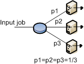
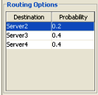

______________________
The Queueing station is one of the most important components in a queuing network model. Queueing stations represent the service facilities of the system being modelled. A Queueing station provides the required service to its customers. Queueing stations may have any (finite) number of servers. If all the servers in the station are busy when a customer arrives at the station, the arriving customer is put in a waiting queue until its turn to receive service from the first available server is up. The queueing discipline decides which customer is served next when a server becomes free. Therefore, the response time at server stations includes service time and queuing time.
Queueing stations may have more than one server. Their number is a parameter to be specified (default is 1).
Set or change the properties:
With a double click on the server icon you will see the property panel:
Station Name: name you want to give to the server
Queue Section:
The Queue section allows the specification of the queueing capacity (whether finite or infinite) and policy. Different classes may have different policies associated with them.
Capacity: a station can accept any customer and let them wait in quue, in which case its capacity is considered infinite, or it can only accept a finite number of customers. In this case its capactiy is finite, with a length to be specified.
Queue policy: it is the algorithm used to decide which customer to serve next. A variety of factors can contribute to the order in which customers are served, such as arrival order, priorities associated with a class, the amount of service already provided to customers, etc.
In JSIM queueing disciplines based on arrival order and priority are the only available, namely:
- FCFS: under the First Come First Served queueing discipline, customers are served in the order in which they arrive at the station. If the model is exported to MVA, the following constraint is enforced in the exported model. Since all customer classes must have the same average service time at a FCFS station, the total number of visits to the station (Vc,k) is adjusted in order to comply with the constraint and at the same time allow for distinct service demands (Dc,k).
- FCFS (Priority): under this policy, customers are ordered according to their arrival time but customers with higher priority jump ahead of customers with lower priority (conventionally a small priority number = low priority). Customers with the same priority are served FCFS.
- LCFS: under the Last Come First Served queueing discipline, an arriving job jumps ahead of the queue and will be served first, unless other jobs arrive before the one currently in service finishes. The LCFS discipline implemented in JSIM is not the preemptive-resume type.
- LCFS (Priority): under this policy, the next customer to be served is one with the highest priority (conventionally a small priority number = low priority), so an arriving customer can only jump ahead of the queue of the other jobs with the equal or smaller priority. Customers with the same priority are served LCFS.
Drop Rule: it is not active when infinite capacity is selected. For each class you can select a rule to apply when a job cannot enter the the station's queue since its capacity is exceeded, i.e., the queue is full. Please refer to this topic for detailed informations.
Service Section:
This section allows the specification of the number of servers and the service time distribution.
The number of servers in a server station can be modified using the corresponding input area:
For each class, you must specify whether the service time is Load Dependent or Load Independent using this menu:
Load Indipendent: A load independent service indicates that, regardless of the number of jobs that are in the station, the system will serve all jobs following a fixed policy modelled by the chosen statistical distribution. To choose the Distribution press the button and insert all neccesary parameters from this window:
The following service time distributions are supported:
|
Load Dependent: A load dependent service time indicates that the amount of time the server spends with each customer depends upon the current number of customers in the station. A set of intervals for the number fo jobs in the station is specified, either by adding one range at a time via the  button or by specifying the total number at once. Each range must them be specified by its lower (From) and upper (To) extremes. Each such range can be associated with different service times, as for the distribution, the mean and the coefficient of variation, or a subset thereof.
button or by specifying the total number at once. Each range must them be specified by its lower (From) and upper (To) extremes. Each such range can be associated with different service times, as for the distribution, the mean and the coefficient of variation, or a subset thereof.
To set the parameters of a Load Dependent service time, click the to edit the Service Time Distribution. This panel appearbutton and then specify the parameters for each added range:
For each customer number range you must specify the following parameters:
Distribution: you can choose among Pareto, Erlang, Exponential, Hyperexponential, Poisson, Uniform, Constant, Gamma and Normal distribution.
Mean: the mean value of each distribution is specified in the "Mean" form by double clicking on it. Insert a number or an arithmetic expression that will be evaluated with JFEP - Java Fast Expression Parser by Bertoli Marco. For a complete list of the command supported by JFEP you can read the "Help" tab or see the official JFEP web site at http://jfep.sourceforge.net/
C: The coefficient of variation of each distribution (when C exist) can be specified by double clicking on the "C" form. For example, in the previous picture two policies are defined:
From 1 to 4 jobs in the station, the server will behave according to an Erlang distribution with mean = 1 and C = 0.5. For any number of jobs greater or equal to 5 in the station, the system will behave according to an Exponential distribution with mean = 1.
If you want to delete a range click .
In the routing section, for every class defined, you can decide how the completed jobs are routed to the other devices connected to station for which the routing strategy is defined.

For each class, select the algorithm you want to use for outgoing connections.
|
With this strategy, jobs are routed randomly to one of the stations connected to the routing device. The outgoing links are selected with the same probability.The figure illustrates the routing strategy with 3 output links. For each link the probability to be selected is 1/3.  |
|
With this algorithm, jobs are cyclically routed to the outgoing links according to a circular routing. As the figure shows, the first job is sent to the top station, the second job is sent to the central station, and the third job is sent to the bottom station. The next job would be sent to the top station again, and so on.
|
 |
With this algorithm, you can define the routing probability for each outgoing link.The sum of all probabilities must equal 1. If the values provided do not satisfy the constraint, JSIM automatically normalizes the values before the simulation starts. This strategy requires that you define the probability foreach output link via the panel on the bottom right of the window.
|
|
With this strategy, each job is routed to the device that has the smallest queue length, i.e., number of jobs waiting, at the time the job leaves therouting station. The figure shows a case where the queue lenghts at the devices are 3, 2, and 1 jobs, respectively, from top to bottom. The exitiing job will be routed to the bottom station, since its queue is the shortest(1 job).
|
|
With this algorithm, jobs are sent to the station where the average response time for the job's class is the smallest at the moment a job leaves the routing station.The figure shows that at the time of routing, the middle station has the smallest average response time, R, so the job will be sent to it.
|
|
With this strategy, the destination device is chosen as the one with the smallest average utilization at the time routing is performed. In the example depicted in the picture, the top station is the least utilized, so it will receive the next job to leave the blue station.
|
|
With this strategy, a job is routed to the device with the smallest average service time, S, for the job's class. In the figure, the exiting job will be routed to the top station since it service time is the minimum among the three.
|